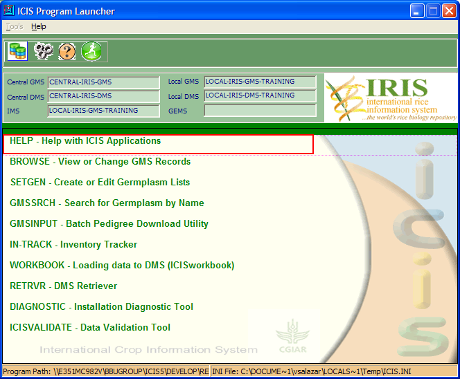
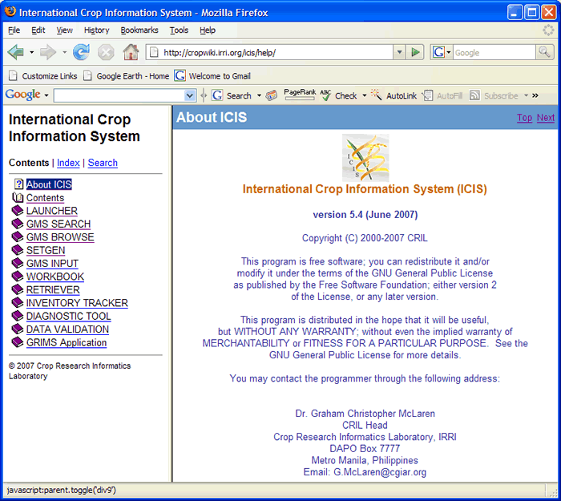
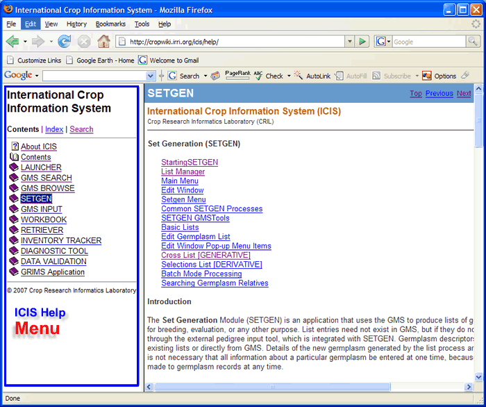
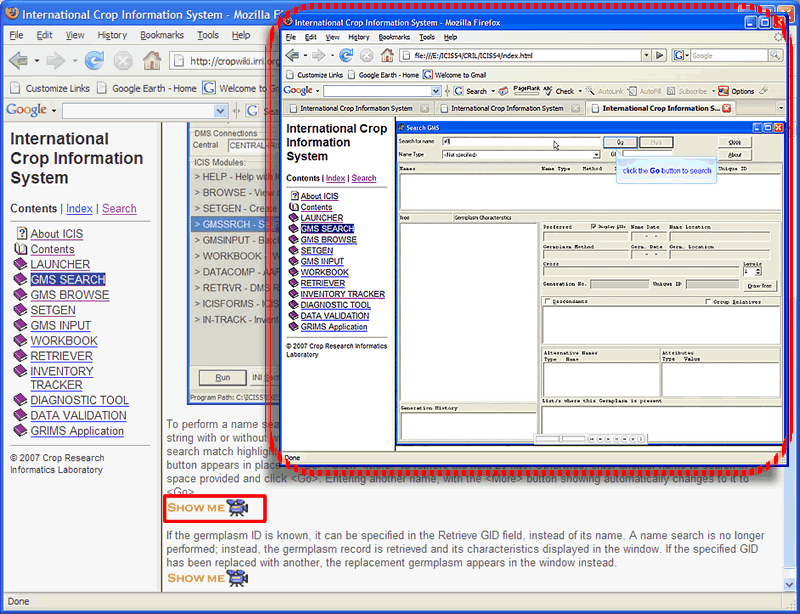

Introduction
ICIS Help was developed for ICIS users- breeders, data curators and scientist. It aims to maximize the use of ICIS Applications- Browse, Setgen, GMS Search, GMS Input, Workbook, Retriever, ICIS Forms and In-Track. The application is made up of text links and video clips to help its users learn and apply the full potential of the ICIS application in germplasm management.

Definition of Terms
Browse
The Browse program is a GMS application for viewing and changing GMS records. It is a FORTRAN 90 console application with a DOS-style user interface.
SetGen
The Set Generation Module (SETGEN) is an application that uses the GMS to produce lists of germplasm descriptors for breeding, evaluation, or any other purpose.
GMS Search
The GMS Search application is a tool for finding germplasm in the GMS, and displaying its corresponding information and/or any relevant information attached to it.
GMS Input
The GMS Input tool is an application for loading large volumes of historical germplasm data into GMS. The input tool loads cross, cultivar or accession data to a local database that can later be uploaded to the central database.
InTrack
The Inventory Tracker module (InTrack) is an application that manages any item in storage.
Workbook
The Workbook is the data entry application for the Data Management System of ICIS. An Excel spreadsheet serves as the medium for data entry.
Retriever
The Retriever is an MS Access application that extracts data primarily from DMS by the specified property (trait), scale and method. But it also retrieves related information from GMS.
Installation Diagnostic Tool
The Installation Diagnostic Tool is an application that tests the different components of your ICIS installation to determine the cause of error situations.
Data Validation Tool
The Data Validation Tool is an application that searches ICIS for data errors that might render it meaningless. This is useful in making sure that published data are always of excellent quality.
Using ICIS Help
You can use ICIS Help from the Launcher--> select, HELP- Help with ICIS Application

On the left side is the ICIS Help Menu

Text and Video Help
You can use ICIS Help using menu link and video clips (Show Me)
When you select this image a new window will appear showing a video clips

Searching in ICIS Help
1. ICIS Help Menu (left side)--> select, Search Search window opens
2. Enter keyword to search to the input box (e.g. 'browse') and click Submit

|